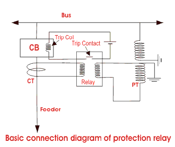

Protection System in Power System
Functional Requirements of Protection Relay
• Reliability
• Selectivity
• Sensitivity
• Speed
Important Elements for Power System Protection
• Switchgear
• Protective Gear
• Station Battery
This portion of our website covers almost everything related to protection system in power system including standard lead and device numbers, mode of connections at terminal strips, color codes in multi-core cables, Dos and Don’ts in execution. It also covers principles of various power system protection relays and schemes including special power system protection schemes like differential relays, restricted earth fault protection, directional relays and distance relays etc. The details of transformer protection, generator protection, transmission line protection & protection of capacitor banks are also given. It covers almost everything about protection of power system.
The switchgear testing, instrument transformers like current transformer testing voltage or potential transformer testing and associated protection relay are explained in detail. The close and trip, indication and alarm circuits different of circuit breakers are also included and explain.
Objective of Power System Protection
The objective of power system protection is to isolate a faulty section of electrical power system from rest of the live system so that the rest portion can function satisfactorily without any severer damage due to fault current.
Actually circuit breaker isolates the faulty system from rest of the healthy system and this circuit breakers automatically open during fault condition due to its trip signal comes from protection relay. The main philosophy about protection is that no protection of power system can prevent the flow of fault electric current through the system, it only can prevent the continuation of flowing of fault electric current by quickly disconnect the short circuit path from the system. For satisfying this quick disconnection the protection relays should have following functional requirements.
Protection System in Power System
Let’s have a discussion on basic concept of protection system in power system and coordination of protection relays.

In the picture the basic connection of protection relay has been shown. It is quite simple. The secondary of electric current transformer is connected to the electric current coil of relay. And secondary of voltage transformer is connected to the voltage coil of the relay. Whenever any fault occurs in the feeder circuit, proportionate secondary electric current of the CT will flow through the electric current coil of the relay due to which mmf of that coil is increased. This increased mmf is sufficient to mechanically close the normally open contact of the relay. This relay contact actually closes and completes the DC trip coil circuit and hence the trip coil is energized. The mmf of the trip coil initiates the mechanical movement of the tripping mechanism of the circuit breaker and ultimately the circuit breaker is tripped to isolate the fault.
Functional Requirements of Protection Relay
Reliability
The most important requisite of protective relay is reliability. They remain inoperative for a long time before a fault occurs; but if a fault occurs, the relays must respond instantly and correctly.
Selectivity
The relay must be operated in only those conditions for which relays are commissioned in the electrical power system. There may be some typical condition during fault for which some relays should not be operated or operated after some definite time delay hence protection relay must be sufficiently capable to select appropriate condition for which it would be operated.
Sensitivity
The relaying equipment must be sufficiently sensitive so that it can be operated reliably when level of fault condition just crosses the predefined limit.
Speed
The protective relays must operate at the required speed. There must be a correct coordination provided in various power system protection relays in such a way that for fault at one portion of the system should not disturb other healthy portion. Fault electric current may flow through a part of healthy portion since they are electrically connected but relays associated with that healthy portion should not be operated faster than the relays of faulty portion otherwise undesired interruption of healthy system may occur. Again if relay associated with faulty portion is not operated in proper time due to any defect in it or other reason, then only the next relay associated with the healthy portion of the system must be operated to isolate the fault. Hence it should neither be too slow which may result in damage to the equipment nor should it be too fast which may result in undesired operation.
Important Elements for Power System Protection
Switchgear
Consists of mainly bulk oil circuit breaker, minimum oil circuit breaker, SF6 circuit breaker, air blast circuit breaker and vacuum circuit breaker etc. Different operating mechanisms such as solenoid, spring, pneumatic, hydraulic etc. are employed in circuit breaker. Circuit breaker is the main part of protection system in power system it automatically isolate the faulty portion of the system by opening its contacts.
Protective Gear
Consists of mainly power system protection relays like electric current relays, voltage relays, impedance relays, power relays, frequency relays, etc. based on operating parameter, definite time relays, inverse time relays, stepped relays etc. as per operating characteristic, logic wise such as differential relays, over fluxing relays etc. During fault the protection relay gives trip signal to the associated circuit breaker for opening its contacts.
Station Battery
All the circuit breakers of electrical power system are DC (Direct Current) operated. Because DC power can be stored in battery and if situation comes when total failure of incoming power occurs, still the circuit breakers can be operated for restoring the situation by the power of storage battery . Hence the battery is another essential item of the power system. Some time it is referred as the heart of the electrical substation. An electrical substation battery or simply a station battery containing a number of cells accumulate energy during the period of availability of A.C supply and discharge at the time when relays operate so that relevant circuit breaker is tripped.
 by
by